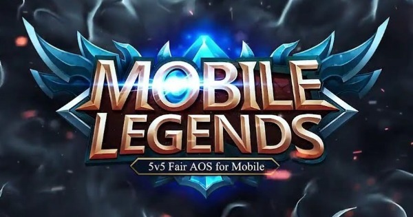
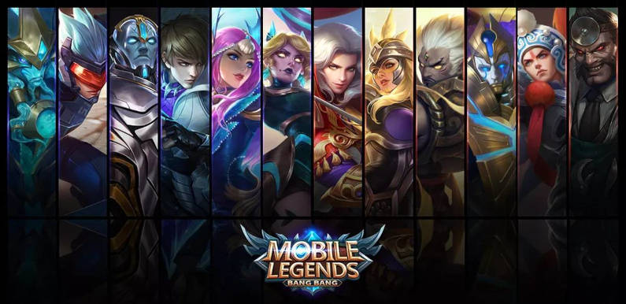
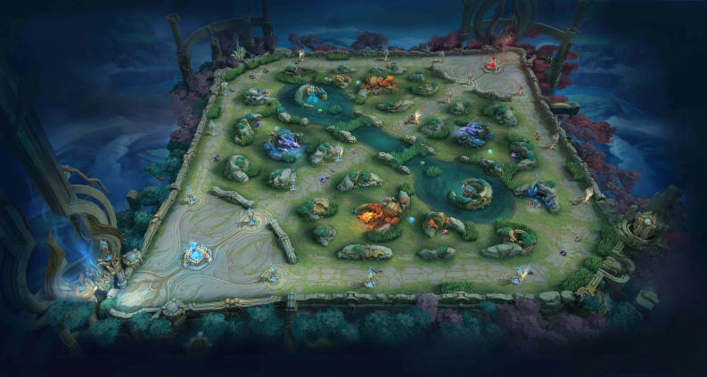

Sobre Mobile Legends
Mobile Legends é um MOBA desenvolvido pela Moonton disponível para baixar de graça em celulares Android e iOS (iPhone), ou no PC via emulador. No game, os jogadores se enfrentam em times de cinco players (5v5) nos principais modos de jogo: o Clássico, o jogo normal, e o Rank, as ranqueadas.
Existem ainda os modos Devastação, Rixa, VS A.I, Personalizado e Arcade.
Sobre Heróis
Os heróis são divididos em Elementais, Tecnológicos, Marciais, Luz e Trevas e cada um possui atributos, habilidades e especialidades distintas. A raridade deles define o nível máximo que se pode evoluí-los.
Para um jogo ao estilo MOBA, é interessante que o jogador possa escolher entre tipos diferentes, que apresentam habilidades únicas e funções específicas para um momento de batalha.
Mapas do Moba
O mapa é uma área do campo de batalha onde os jogadores jogam como heróis e lutam uns contra os outros para vencer o jogo. Existem diferentes mapas que dependem do modo de jogo. Alguns mapas têm variantes diferentes com base em eventos sazonais.
Cada mapa será baseado nos locais da Terra do Amanhecer, exceto no Modo Evoluir.